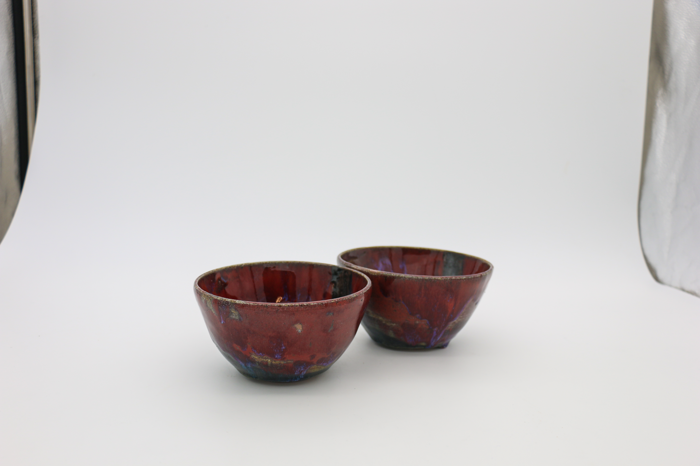
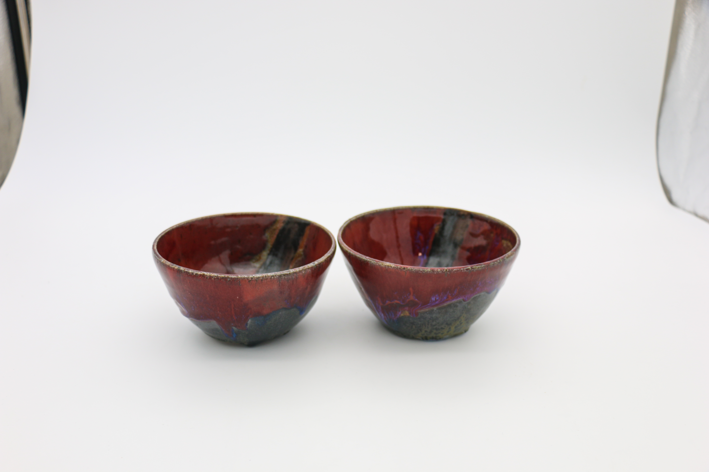
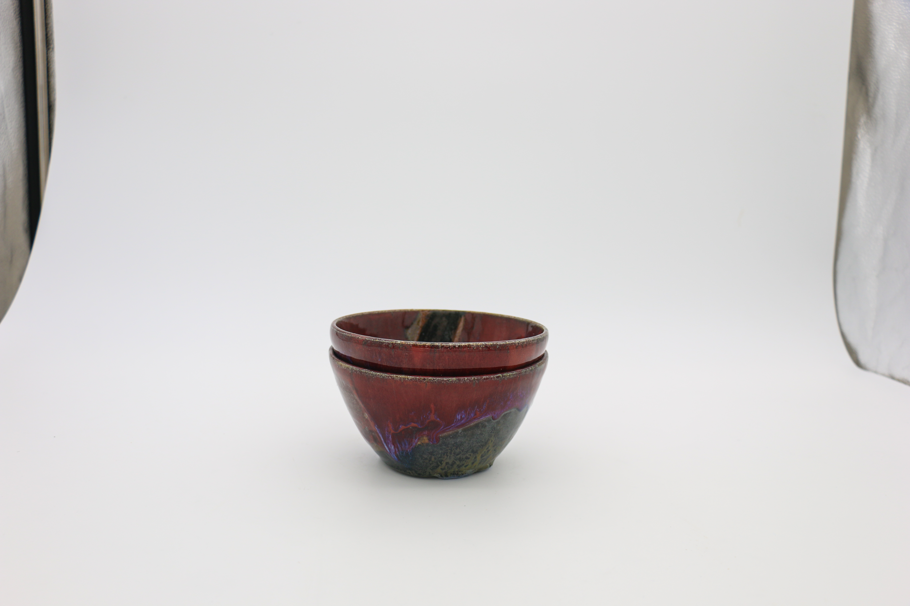
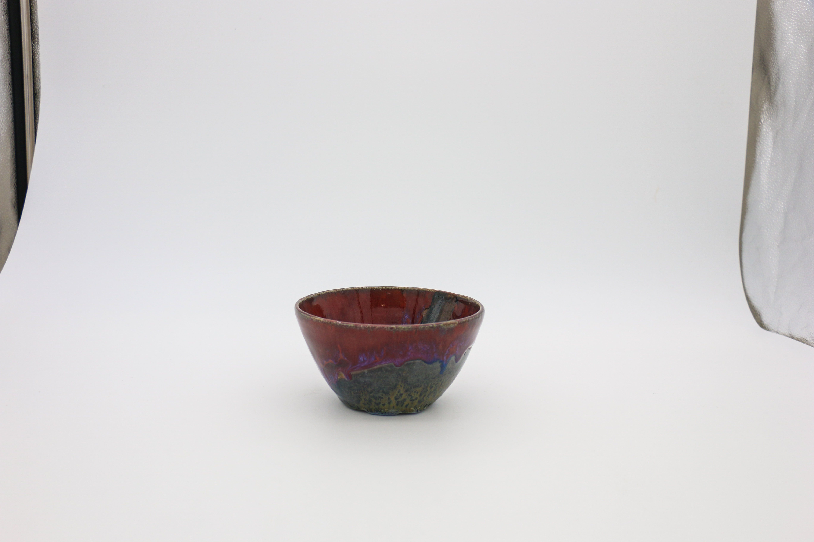
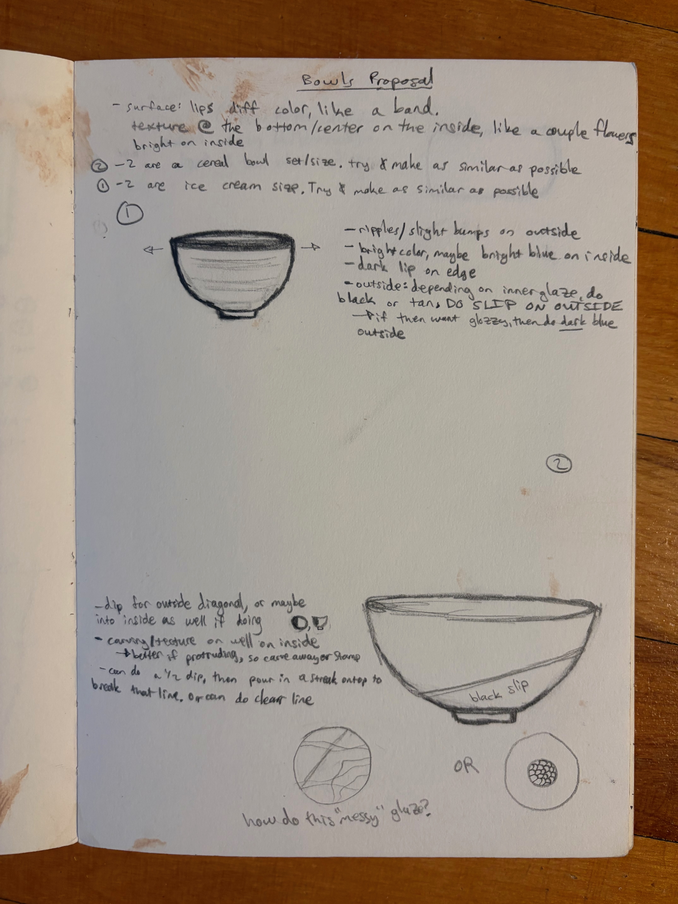

Set of two bowls, using different color and texture of glaze in a dynamic layout to envoke a sensation of an active effort in finding balance.
Included are also some of my initial brainstorming from my ceramics notebook for these pieces.




